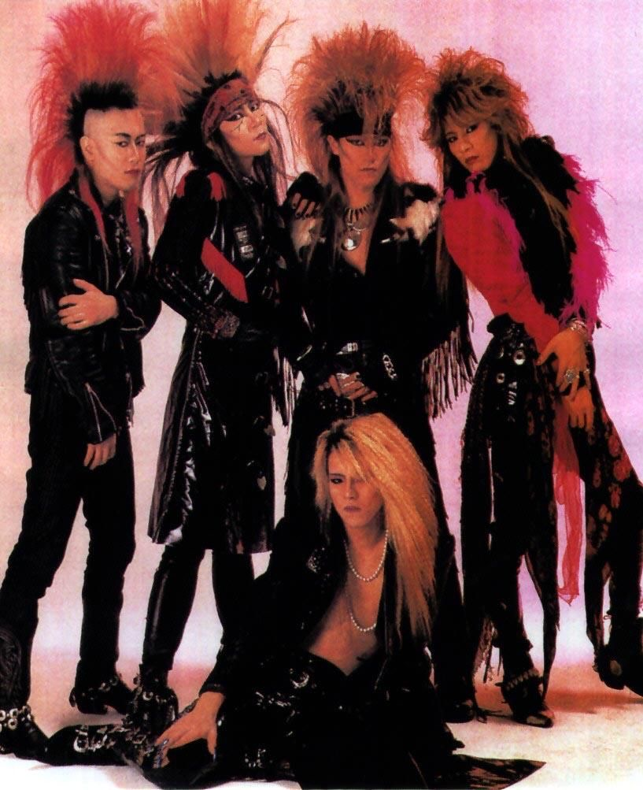
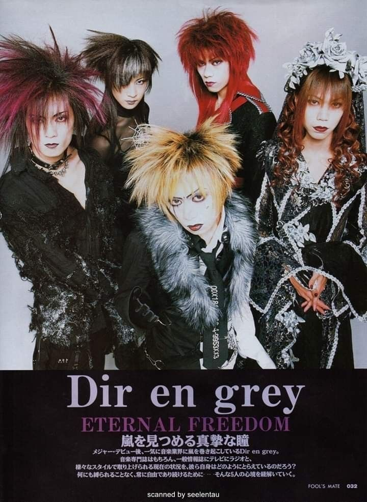

Za nastanak pokreta često se vezuje nekoliko bendova koji su počeli da spajaju rok muziku sa upečatljivim vizuelnim identitetom. Među najvažnijim ranim predstavnicima bili su "X-Japan", "Buck-Tick", "Dead End" i "D'erlanger". Njihov izgled bio je inspirisan glam rokom, punk kulturom, gotikom i zapadnim izvođačima kao što su Dejvid Bouvi i "Kiss".
Tokom ranih 1990-ih godina visual-kei je počeo brzo da se širi japanskom alternativnom scenom. Popularnost televizije, muzičkih časopisa i spotova omogućila je bendovima da dopru do šire publike. Za razliku od mnogih drugih pravaca, publiku nije privlačila samo muzika, već i celokupan identitet izvođača. Time je sve više mladh bendova počelo da usvaja elemente ovog stila, pa je pokret postao jedan od najprepoznatljivijih fenomena japanske rok scene.
Sredinom i krajem 1990-ih godina visual-kei se razvijao u različitim pravcima. Neki bendovi su težili mračnijem zvuku, dok su drugi koristili klasične instrumente, orkestralne elemente i romantičnu estetiku.
U tom periodu veliku popularnost su stekli bendovi kao što su "Malice Mizer", "Luna Sea", "La'cryma Christi" i "Dir en grey".

Početkom 2000-ih godina popularnost pokreta u Japanu počela je da opada, ali se istovremeno proširio izvan granica zemlje. Internet, fan zajednice i društvene mreže omogućili su ljudima širom sveta da otkriju japansku muziku. Čak je 2013. godine Švedska umalo poslala jedan njihov domaći visual-kei bend na "Evroviziju".
Danas visual-kei i dalje postoji, ali se mnogo promenio u odnosu na svoje početke. Moderni bendovi često kombinuju tradicionalne elemente sa savremenim muzičkim stilovima.
Lena Dragutinović Gimnazija Bačka Palanka 2026.